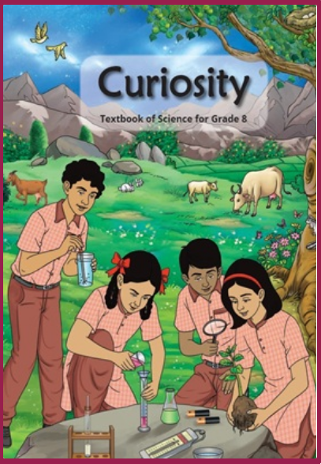

NCERT Solutions

Curiosity is the current NCERT Science textbook for Class 8 students. It encourages students to learn Science through observation, questioning, investigation, experimentation, reasoning and evidence-based thinking.
Yes. Curiosity is the current NCERT Science textbook for Class 8 for the 2026–27 academic session.
Curiosity is published by the National Council of Educational Research and Training (NCERT).
The current Class 8 Science textbook Curiosity contains 13 chapters.
The textbook covers scientific investigation, microorganisms, health, electricity, forces, pressure, winds and cyclones, matter, elements and compounds, mixtures and solutions, light, time, natural systems, ecosystems and Earth science.
The first chapter is “Exploring the Investigative World of Science.” It introduces students to scientific inquiry, observation, investigation, experimentation and drawing conclusions from evidence.
Chapter 2, “The Invisible Living World: Beyond Our Naked Eye,” introduces students to the microscopic world and helps them understand living organisms that cannot normally be seen with the naked eye.
Yes. Chapter 3 is titled “Health: The Ultimate Treasure.” It deals with important ideas related to health and well-being.
Yes. Chapter 4, “Electricity: Magnetic and Heating Effects,” introduces students to important effects and applications of electric current.
Yes. Chapter 5, “Exploring Forces,” deals with forces, while Chapter 6, “Pressure, Winds, Storms, and Cyclones,” explores pressure and related natural phenomena.
Yes. The textbook includes chapters on the particulate nature of matter, elements, compounds, mixtures, solutes, solvents and solutions.
Chapter 7 is titled “Particulate Nature of Matter.” It helps students understand matter in terms of particles and develops the foundation for understanding the microscopic nature of substances.
Chapter 8, “Nature of Matter: Elements, Compounds, and Mixtures,” introduces students to elements, compounds and mixtures and helps them understand how substances can be classified.
Yes. Chapter 9, “The Amazing World of Solutes, Solvents, and Solutions,” introduces these concepts and their applications in everyday situations.
Yes. Chapter 10, “Light: Mirrors and Lenses,” deals with important concepts related to light, mirrors and lenses.
Yes. The textbook includes topics related to the sky, natural systems and Earth science. The final chapter, “Our Home: Earth, a Unique Life Sustaining Planet,” focuses on Earth as a planet that supports life.
Chapter 11 is titled “Keeping Time with the Skies.” It explores the measurement and understanding of time through observations of the sky and periodic phenomena.
Chapter 12, “How Nature Works in Harmony,” explores relationships and interactions within natural systems and helps students understand how different components of nature work together.
The final chapter is “Our Home: Earth, a Unique Life Sustaining Planet.” It focuses on Earth and the conditions that make it capable of supporting life.
The main objective is to develop scientific understanding along with curiosity, observation, questioning, investigation, reasoning, problem-solving and evidence-based thinking.
No. The textbook encourages students to understand concepts, investigate scientific phenomena, perform activities, analyse observations and develop explanations rather than relying only on memorisation.
Yes. Activities and investigations are an important part of the learning approach. They encourage students to observe phenomena, test ideas and understand scientific concepts through experience.
Yes. Students should thoroughly study the concepts, activities, illustrations, examples and exercises in the textbook. Regular practice of textbook-based and application-based questions can strengthen examination preparation.
Students should read each chapter carefully, understand the concepts, observe the diagrams, perform suggested activities, learn important scientific terms and practise the exercises. Connecting scientific ideas with everyday examples can make learning more effective.
Yes. Students are encouraged to ask questions, make observations, investigate problems, analyse evidence and draw logical conclusions. These are essential skills for developing a scientific approach to understanding the world.
Yes. Students can improve their understanding by studying concepts step by step, using diagrams and examples, performing activities and relating scientific ideas to familiar situations from everyday life.
Yes. Students can use reliable educational resources for chapter-wise solutions, notes, explanations, important questions, practice questions and revision material based specifically on the Class 8 Curiosity textbook.
Useful resources include chapter-wise notes, NCERT solutions, important questions, worksheets, diagrams, concept explanations, practice questions, revision notes and sample papers.
The current Class 8 Curiosity textbook is associated with the 2026–27 academic session.
The current Class 8 Science Curiosity textbook contains 13 chapters, covering a broad range of concepts from scientific investigation and matter to life, light, natural systems and Earth science.
Curiosity is the NCERT Science textbook for Class 8 students. It encourages students to understand Science through observation, questioning, exploration, experimentation and logical reasoning.
Yes. Curiosity is the NCERT Science textbook for Class 8 and is designed according to the updated curriculum framework.
The Curiosity textbook is published by the National Council of Educational Research and Training (NCERT).
The current Class 8 Science Curiosity textbook contains 13 chapters.
Curiosity integrates concepts from Physics, Chemistry, Biology, Environmental Science and Earth and Space Science.
The first chapter is “Exploring the Investigative World of Science.” It introduces students to scientific investigation, observation, questioning, experimentation and evidence-based reasoning.
Yes. The textbook introduces students to the microscopic world and organisms that cannot normally be seen with the naked eye.
Yes. Chapter 3, “Health: The Ultimate Treasure,” deals with important concepts related to health and well-being.
Yes. Chapter 4, “Electricity: Magnetic and Heating Effects,” covers important effects and applications of electric current.
Yes. The textbook includes chapters on forces, pressure, winds, storms and cyclones.
Yes. Students study topics related to the particulate nature of matter, elements, compounds, mixtures, solutes, solvents and solutions.
Yes. Chapter 10, “Light: Mirrors and Lenses,” introduces important concepts related to light, mirrors and lenses.
Yes. The textbook covers important concepts related to living organisms and natural systems, helping students understand how different components of life function and interact.
Yes. The textbook includes topics related to the sky, time, natural systems and Earth as a life-supporting planet.
The last chapter is “Our Home: Earth, a Unique Life Sustaining Planet.” It focuses on Earth and the conditions that make it suitable for supporting life.
The main objective is to develop scientific understanding, curiosity, observation, questioning, investigation, logical reasoning and problem-solving skills among students.
No. The book encourages students to understand concepts through activities, observations, investigations, reasoning and evidence instead of depending only on memorisation.
Yes. Activities and investigations are an important part of the textbook's learning approach and help students connect scientific concepts with observations and real-life situations.
Yes. Students should thoroughly study the concepts, activities, diagrams, examples and exercises given in the textbook for effective examination preparation.
Students should read each chapter carefully, understand the concepts, study diagrams, perform suggested activities, learn important scientific terms and practise the exercises regularly.
Yes. The book encourages students to ask questions, observe phenomena, investigate problems, analyse evidence and draw logical conclusions.
Yes. Students can improve their understanding by learning concepts step by step, using diagrams and examples, performing activities and connecting Science with familiar situations.
Yes. Students can use chapter-wise solutions, notes, explanations, important questions, practice questions and revision material based on the Class 8 Curiosity textbook.
Useful resources include NCERT solutions, chapter-wise notes, important questions, worksheets, diagrams, concept explanations, practice questions, revision notes and sample papers.
The current Class 8 Curiosity textbook is associated with the 2026–27 academic session.
The current NCERT Class 8 Science textbook, Curiosity, contains 13 chapters covering a wide range of scientific concepts and applications.
Students can use reliable educational websites offering chapter-wise solutions, notes, important questions, worksheets, diagrams and revision resources based specifically on the Curiosity textbook.